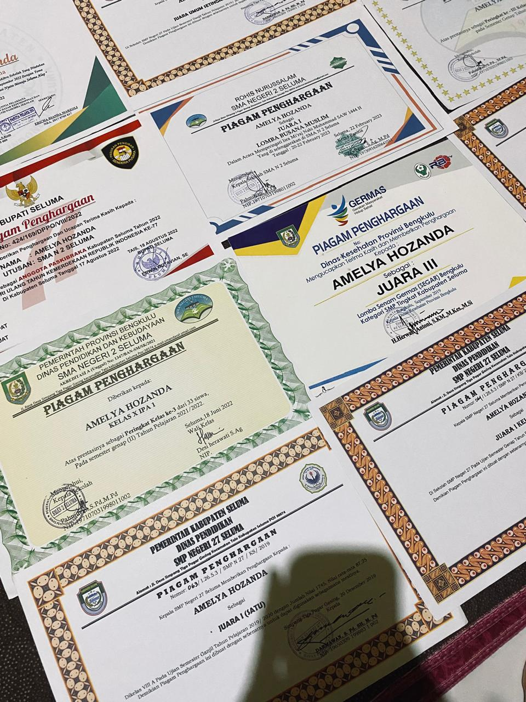

My Portfolio


Menjadi anggota Paskibraka adalah sebuah kebanggaan besar karena merupakan kesempatan langka untuk berkontribusi dalam upacara penting peringatan Hari Kemerdekaan. Sebagai anggota Paskibraka Kabupaten Seluma tahun 2022, saya terpilih melalui seleksi ketat yang melibatkan tes fisik, mental, serta pengetahuan tentang kebangsaan. Saya mengikuti pelatihan intensif selama beberapa minggu untuk mempersiapkan diri sebagai pengibar bendera, belajar tentang disiplin, kepemimpinan, dan kerja sama tim. Selama latihan, saya tidak hanya mengasah keterampilan baris-berbaris, tetapi juga mempelajari nilai-nilai kejujuran, ketangguhan, dan dedikasi. Pengalaman ini membentuk saya menjadi pribadi yang lebih tangguh, memiliki semangat nasionalisme yang tinggi, dan mampu menghargai perjuangan pahlawan bangsa.

Sertifikat prestasi